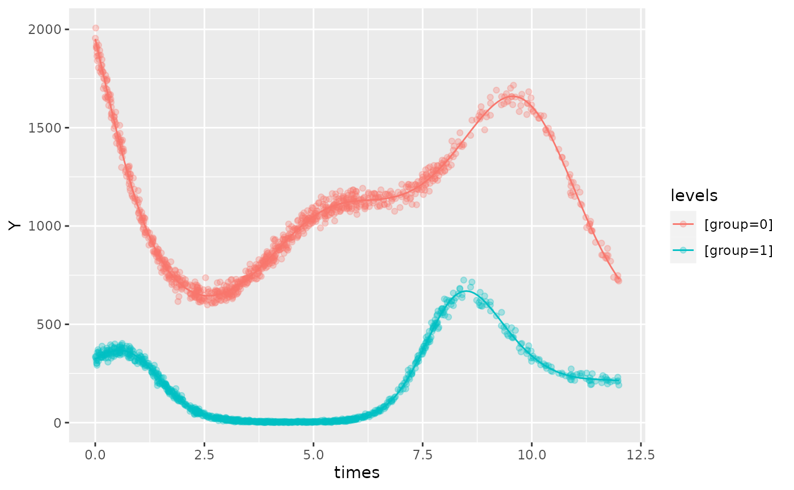

data-simulations
Oliver Jayasinghe and Rex Parsons
Source:vignettes/data-simulations.Rmd
data-simulations.RmdUsing: ‘simulate_cosinor.R’
Simulate_cosinor allows users to simulate circadian data from four distributions: - family = ‘gaussian’ - family = ‘Gamma(link = ’log’)’ - family = ‘binomial’ - family = ‘poisson’
simulate_cosinor(
n = 100,
mesor = 1,
amp = 2,
acro = 1.2,
period = 12,
n_components = 1,
beta.group = TRUE,
beta.mesor = 0.4,
beta.amp = 0.5,
beta.acro = 0.2,
family = c("poisson")
)mesor, amp, and acro represent the parameters for the first level, and the beta.prefix indicates a second level that can be used for data visualisation (if comparing two groups, for example) if desired.
The simulate_cosinor function can simulate multi-component data. To do this, specify a vector of values for the parameter inputs (amp and acro). Note that the mesor term only accepts single-element inputs. Furthermore, ensure that n_components corresponds to the length of the vectors: amp, acro, beta.amp, beta.acro, and period.
Here is another example of the simulate_cosinor function. The cosinor.glmm object has also been included to demonstrate that the parameter estimates accurately reflect the inputs into the simulate function:
testdata <- simulate_cosinor(1000,
mesor = 7,
amp = c(0.1, 0.4, 0.5),
acro = c(1, 1.5, 0.1),
beta.mesor = 4.4,
beta.amp = c(2, 1, 0.4),
beta.acro = c(1, -1.5, -1),
family = "poisson",
period = c(12, 6, 8),
n_components = 3
)
object <- cosinor.glmm(Y ~ group + amp.acro(times,
n_components = 3,
period = c(12, 6, 8),
group = "group"
), data = testdata, family = poisson())
summary(object)
#>
#> Conditional Model
#> Raw model coefficients:
#> estimate standard.error lower.CI upper.CI p.value
#> (Intercept) 7.0014892 0.0023360 6.9969108 7.0060676 0e+00
#> group1 -2.6009491 0.0080088 -2.6166460 -2.5852522 0e+00
#> group0:main_rrr1 0.0590099 0.0073398 0.0446241 0.0733956 0e+00
#> group1:main_rrr1 1.0762350 0.0204492 1.0361552 1.1163148 0e+00
#> group0:main_sss1 -0.0853979 0.0027834 -0.0908533 -0.0799424 0e+00
#> group1:main_sss1 -1.6859161 0.0090211 -1.7035971 -1.6682350 0e+00
#> group0:main_rrr2 0.0270595 0.0049024 0.0174510 0.0366680 0e+00
#> group1:main_rrr2 0.0787476 0.0151835 0.0489886 0.1085067 2e-07
#> group0:main_sss2 -0.3944677 0.0034102 -0.4011515 -0.3877839 0e+00
#> group1:main_sss2 0.9940340 0.0099996 0.9744351 1.0136328 0e+00
#> group0:main_rrr3 0.4931346 0.0044674 0.4843786 0.5018907 0e+00
#> group1:main_rrr3 0.2118433 0.0097798 0.1926752 0.2310113 0e+00
#> group0:main_sss3 -0.0539975 0.0091895 -0.0720087 -0.0359863 0e+00
#> group1:main_sss3 0.3418972 0.0235046 0.2958290 0.3879654 0e+00
#>
#> Transformed coefficients:
#> estimate standard.error lower.CI upper.CI p.value
#> (Intercept) 7.0014892 0.0023360 6.9969108 7.0060676 0e+00
#> [group=1] -2.6009491 0.0080088 -2.6166460 -2.5852522 0e+00
#> [group=0]:amp1 0.1038025 0.0055656 0.0928942 0.1147108 0e+00
#> [group=1]:amp1 2.0001487 0.0158947 1.9689956 2.0313018 0e+00
#> [group=0]:amp2 0.3953947 0.0025663 0.3903648 0.4004246 0e+00
#> [group=1]:amp2 0.9971483 0.0100885 0.9773752 1.0169214 0e+00
#> [group=0]:amp3 0.4960821 0.0067291 0.4828934 0.5092708 0e+00
#> [group=1]:amp3 0.4022080 0.0229987 0.3571313 0.4472846 0e+00
#> [group=0]:acr1 0.9661363 0.0533298 0.8616118 1.0706609 0e+00
#> [group=1]:acr1 1.0026417 0.0087818 0.9854296 1.0198538 0e+00
#> [group=0]:acr2 1.5023061 0.0093289 1.4840217 1.5205905 0e+00
#> [group=1]:acr2 -1.4917412 0.0170890 -1.5252351 -1.4582473 0e+00
#> [group=0]:acr3 0.1090640 0.0200948 0.0696790 0.1484490 1e-07
#> [group=1]:acr3 -1.0160817 0.0334301 -1.0816035 -0.9505599 0e+00
plot(object, superimpose.data = TRUE, x_str = "group", predict.ribbon = FALSE)